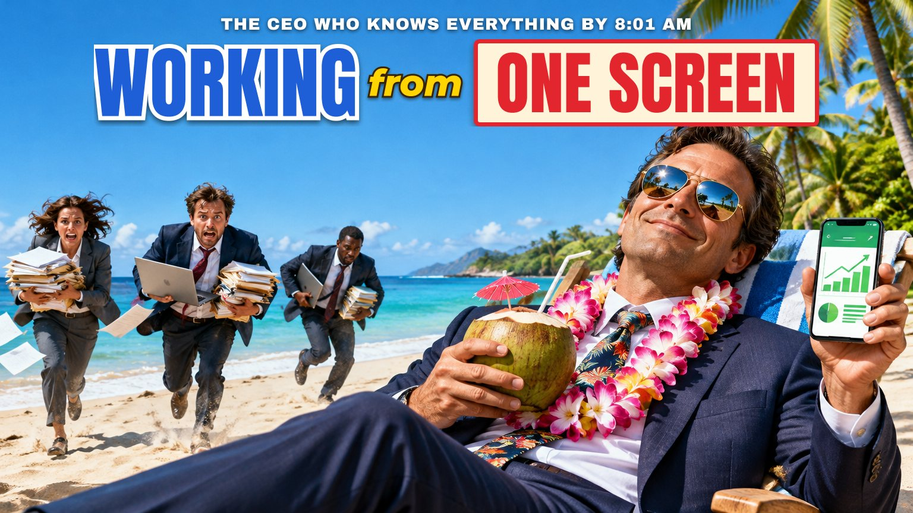

Your whole company on one screen
How I built a live command centre for a UAE travel company, and how I can build one around the way your business runs.

CRM walkthrough · Open the live demoOn this page
Key takeaways
- One live dashboard replaces a morning of chasing numbers across tools.
- Sales, marketing, operations and leadership all see the same figures.
- Slack alerts and an AI adviser flag problems before they get expensive.
Most leaders I talk to have the same morning routine. Open the booking system. Open the ads manager. Scroll through the team chat. Ask sales how the week is going. Ask marketing what the campaigns spent. By the time the picture comes together, half the morning is gone, and it is already out of date.
I am launching a service that fixes this: a custom CRM dashboard, built for your company, fed by live data from the tools you already use. Here is what that looks like in practice, from a system I built for a travel company in the UAE that runs volunteering, wellness and adventure trips across Asia and Africa.
The problem: the information exists, but it is scattered
The company already had good tools. A booking platform for trips and payments. Meta for ads on Facebook and Instagram. WhatsApp and Instagram for customer chats. A task board for every team. Slack for talking. Every tool worked. None of them talked to each other, and nobody had the full picture without asking three people.
The leadership ask was simple: one place to see what is happening in the company, right now, without chasing anyone.
What I built: a live command centre
A single web app that pulls from every system in real time and organises it the way the business thinks: Sales, Marketing, Operations and Corporate, with an executive Dashboard on top. Nobody types numbers into it. When a customer books, when a campaign spends, when a lead writes in, the dashboard already knows.
The executive Dashboard: ten seconds to know how the company is doing
This is the first screen leadership sees. It is built for a quick glance, not a deep dive, and it only shows what an executive needs.
- KPI scorecard. Bookings, leads, high-potential leads and conversion rate, each shown for today, this week and this month against its target, with a clear tick or cross and a progress bar. Any past day, week or month can be picked to compare.
- At-a-glance cards. Ad cost per result, ad budget used, guest satisfaction, trip profit margin, overall KPI pass rate and pending team tasks. Green means fine, red means look closer.
- Bookings trend. Bookings by month or by year, back to the company’s first year, filterable by destination or trip type, with new and returning customers shown separately.
- Upcoming departures. Every upcoming trip week marked sold out, on target, below target or cancelled.
- One tap to the detail. Every card opens the full page behind it. The overview stays clean; the depth is always there when needed.
- Export to PDF. One button turns the dashboard into a report for a board meeting.
What each section does
Behind the Dashboard, each team has its own section with only the pages it needs, organised in simple tabs.
| Section | What it shows, live | Who uses it |
|---|---|---|
| Sales | Every upcoming trip with bookings per week against target. Bookings taken by week and month, year-on-year comparisons for the same month, and every past trip’s results. Leads per day from WhatsApp and Instagram, high-potential leads, conversion from lead to booking, and new versus returning customers. | Sales team, management |
| Marketing | Every Meta ad campaign with spend, results, cost per result and budget. A budget plan the team can edit, with pacing that warns before money runs out. Campaign history from past years. Instagram post performance and engagement. | Marketing team, management |
| Operations | Trip performance and profit margins (as percentages), every trip product with its quality rating and launch pipeline, guest feedback scores and comments per trip, and the social impact record of every trip since the company started. | Operations team, management |
| Corporate | Every sales and marketing KPI marked Passed or Failed, with the reason and the next step. Every pending task across all team boards, by person and by status, with overdue dates highlighted. | Leadership, team leads |
The AI Adviser: a business analyst that has read every page
Numbers tell you what happened. The harder question is what to do about it. So every page has an AI Adviser, powered by Claude, that has read the whole dashboard and answers questions in plain language.
- Ask it anything about the business. “Why did conversion drop this week?” “Which campaign should we put more budget into?” “How is December shaping up against last year?” It answers from the live numbers, not guesses.
- Deep analysis when it matters. Simple questions get a fast answer. Bigger questions, like root causes, forecasts or a full review across departments, are handed to a more powerful model automatically.
- An adviser, never an operator. It can read the data, but it cannot change anything. No accidental edits, no surprises.
- A daily campaign health check. Every morning the AI reviews each running ad campaign and labels it Healthy, Medium or Unhealthy, with what is happening and the next step: keep running, wait, add funds, fix the creative, fix the targeting or pause.
- Chat with your company from Claude itself. The whole CRM can also be connected to Claude as a private, read-only connector, so leadership can ask questions from their own Claude app.
- Cost under control. Daily question limits and smart model routing keep the running cost to a few cents a question.
Slack alerts and reminders: the dashboard comes to you
Executives should not have to remember to check. The system watches the business and posts to Slack when something needs attention, worded so anyone can understand it in one read.
| Alert | When it fires |
|---|---|
| Morning booking report | Every day at 8 AM: every booking taken in the last 24 hours, plus which KPIs passed or failed. |
| Campaign switched on or off | Within about two minutes of any ad campaign being switched on, off or created, with who did it and when. |
| Ad cost too high | When a running campaign’s cost per result crosses the agreed limit. One alert per problem, not a flood. |
| Daily leads target missed | Every night: if the day’s leads or high-potential leads missed target, and which one. |
| Dated reminders | Decisions with a deadline (for example, whether to run a trip) show a countdown on the dashboard until they are due. |
Automations that save hours every week
- Leads counted automatically. Every new WhatsApp and Instagram chat is counted as a lead the moment it arrives, once per person, and tagged to the trip they asked about. No more end-of-day tallies.
- Bookings flow straight to operations. When a customer books, their details land in that trip’s traveller list for the operations team, in the right week, with no duplicates.
- Returning customers recognised. Every booking is checked against the customer’s history, so the company can see how many travellers come back.
- Budget pacing. The planned ad budget is compared with real spend every day, with a projection of when the money runs out.
Built for the way people actually work
- Phone-first. Opens like an app on any phone, with a bottom navigation bar and short pages with filters instead of endless scrolling.
- Installs as an app. One tap adds it to the desktop or home screen, on Windows, Mac, iPhone and Android. Updates appear automatically.
- Easy on the eyes. Light and dark mode, colours checked for readability, and every number paired with a bar or chart so it reads at a glance.
Why executives and teams love it
- Minutes, not mornings. The state of the company in one glance, every day.
- Live, not last week. Every number comes straight from the source system as it happens.
- Everyone aligned. Sales, marketing and operations look at the same numbers, so meetings start with decisions, not with reconciling figures.
- Problems found early. Alerts and the daily AI check catch overspending, missed targets and stuck tasks before they become expensive.
- Built around you. Your KPIs, your targets, your tools and your language, not a generic template.
Now available for your company
Every business runs differently, so every build starts with how yours works. Here is how it goes:
- Discovery. We agree on what leadership needs to see, what each team needs to act on, and which targets matter.
- Connect. I connect your existing tools: booking or sales systems, ad accounts, chat channels, task boards and Slack.
- Build. You get a working dashboard early, then we shape it together, page by page, based on real feedback from your team.
- Grow. New pages, alerts, AI features and KPIs are added as the business changes.